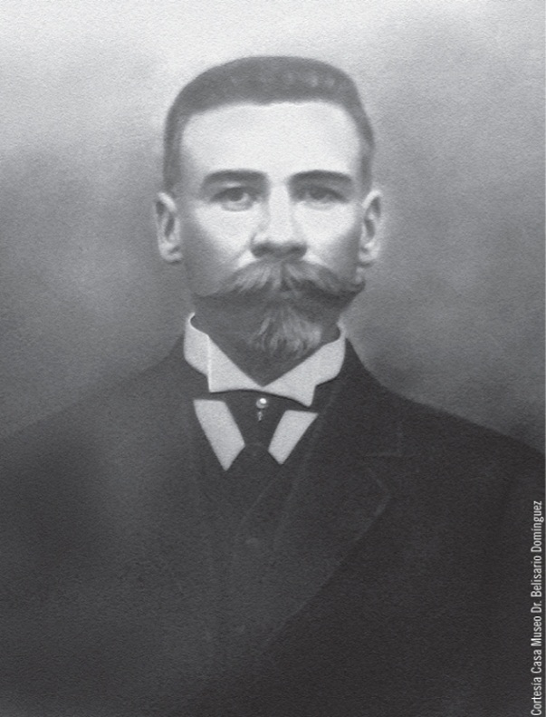
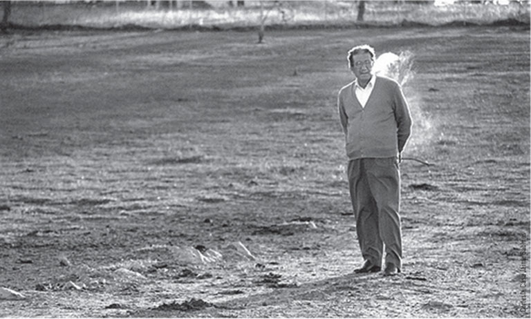
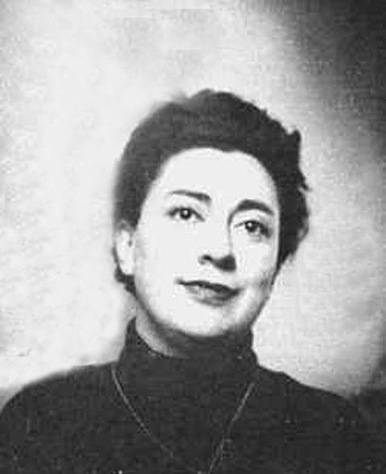
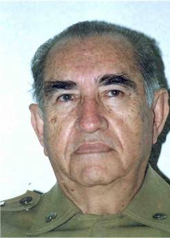
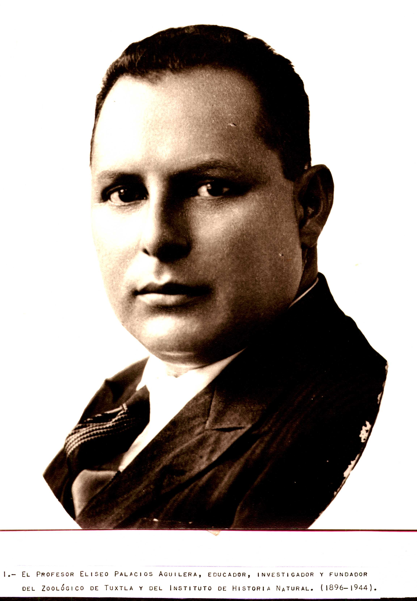

Hijo del matrimonio formado por el comerciante Cleofás Domínguez y la guatemalteca Pilar Palencia, Belisario fue un niño acostumbrado a los ideales bien cimentados, pues en su familia figuraban los nombres de varios héroes locales, como su tío Gregorio, muerto al defender Comitán en contra de los conservadores; su propio padre, mutilado de una pierna por la misma causa; y su tío Pantaleón Domínguez (quien llegó a ser gobernador del estado).Los años en París. Después de recibir la instrucción básica en Comitán, Belisario fue llevado a San Cristóbal, la ciudad más culta de la región, para continuar con sus estudios; pero gracias a la bonanza económica de su familia y al caos que imperó en México durante casi todo el siglo XIX, se optó por trasladar al adolescente a París, en compañía de su hermano Evaristo, de donde regresó, diez años después, siendo bachiller y ostentando los títulos de médico, cirujano, partero y oculista.
El regreso. Al volver a Comitán, Belisario Domínguez Palencia se dedicó a practicar su profesión, dedicándose en cuerpo y alma al servicio de un pueblo que necesitaba los servicios de salud, como un náufrago requiere del agua dulce para sobrevivir. Contrajo matrimonio con una “señorita de sociedad”, Delina Zebadúa, con quien procreó cuatro hijos: Matilde, Hermila, Carmen y Ricardo.

El gran poeta chiapaneco nació en Tuxtla Gutiérrez, el 24 de marzo de 1963. Entre sus obras están Horal (1950), La señal (1951), Adán y Eva (1952), Tarumba (1956), Diario semanario y poemas en prosa (1961), Poemas sueltos (1962), Algo sobre la muerte del mayor Sabines (1973), entre otras. Murió el 19 de marzo de 1999. Basten estas pocas palabras como introducción a un chiapaneco a quien rendiremos un homenaje más extenso y dejemos que su poesía hable.
Nació en la Ciudad de México el 25 de mayo de 1925, después de su nacimiento fue llevada a Comitán, Chiapas, la tierra de sus mayores; ahí transcurrió su infancia y pubertad. A los 16 años regresó al Distrito Federal, graduándose de maestra en filosofía en la universidad Nacional Autónoma de México en 1952. Fue promotora de cultura en el Instituto de Ciencias y Artes de Chiapas, en Tuxtla Gutiérrez; trabajó luego en el Centro Coordinador del Instituto Indigenista de San Cristóbal de las Casas, en Chiapas, y en el Indigenista de México fue la redactora de textos escolares durante 5 años y durante 10 desempeñó la Jefatura de Información y Prensa en la UNAM, cuando fungía como rector el Doctor Ignacio Chávez, también fue catedrática en la Facultad de Filosofía y Letras de la misma Universidad, ejerciendo siempre con gran éxito el magisterio, tanto en México como en el extranjero.Sus obras. Durante los casi 10 años de su escritura sólo publicó poesía; sin embargo, en 1957 publicó su primer novela Balúm Canán, el mundo indígena desde la perspectiva infantil, misma que ha sido reeditada en innumerables ocasiones y traducida a muchas lenguas; esta novela junto con Ciudad Real, publicada en 1960, que refleja la coexistencia entre indígenas y blancos y su primer libro de cuentos Oficio de Tinieblas (trata sobre el levantamiento de los indios chamulas en San Cristóbal en 1867), forman la trilogía indígena más importante de la narrativa mexicana del siglo XX.

Nació en la ciudad de Colima, Colima, el 23 de agosto de 1917. Su infancia y sus primeros estudios los realizó en su natal estado. Proveniente de una familia de terratenientes, su primera escuela de Biología fue el campo, donde se le desarrolló el germen de la Historia Natural, en particular de la Zoología, que ya traía "posiblemente desde antes de nacer", como él mismo decía. Prácticamente todo su tiempo libre lo dedicaba a la observación y colecta de muy diversos animales, pero algo que siempre lo frustró fue la dificultad para preservarlos como especímenes; experimentó con diversos métodos y materiales, pero siempre con más fracasos que éxitos. Su situación cambió radicalmente cuando su familia perdió sus tierras y se vio refugiada en la ciudad de México. Supuestamente su estancia sería temporal pues había planes para radicar en Argentina, lo cual nunca sucedió. El hecho es que los días se hicieron meses, los meses años y este estado de inestabilidad motivó que Miguel no continuara sus estudios profesionales. Muy aficionado a la lectura, siempre revisaba las listas de libros que aparecían en los periódicos, hasta que un día encontró una nota de un libro español titulado Manual de Taxidermia de Luís Soler y Pujol. Una vez en su poder y después de leerlo varias veces, inició la práctica que lo llevaría a dominar el arte de la conservación de animales. Por esos días en su casa se limpió un cuarto lleno de muebles viejos y en un baúl encontró un libro de Zoología, de Odón de Buen. Después de la naturaleza, estos dos libros fueron sus primeros maestros de Historia Natural: uno le enseñó la forma de conservar a los animales y el otro, las bases de la clasificación y el estudio monográfico de los mismos.Aportes a La fauna: El profesor Miguel Álvarez del Toro, en sus obras escritas de 1952 a 1971 sobre los animales silvestres de Chiapas, los reptiles y la aves, divide la entidad en las siguientes provincias zoológicas: 1) La zona húmeda del N (bosque lluvioso, siempre verde y de clima tropical), 2) la altiplanicie o sea las tierras altas cubiertas de pinares, 3) la depresión central vegetación decidua, clima cálido y seco. 4) la sabana costera. 5) el soconusco (gran humedad y vegetación siempre verde).

Naturalista, (1896-1944) especializado en flora y fauna tropical. Fundador y director del Museo de Historia Natural de Chiapas y del Parque Zoológico de Tuxtla Gutiérrez. Son famosos sus trabajos sobre las orquídeas de México.El resguardo sistemático de los fósiles de Chiapas empezó con el trabajo del Profesor Eliseo Palacios Aguilera.